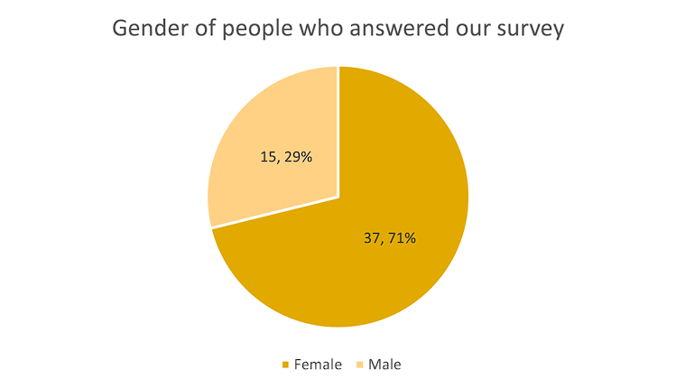
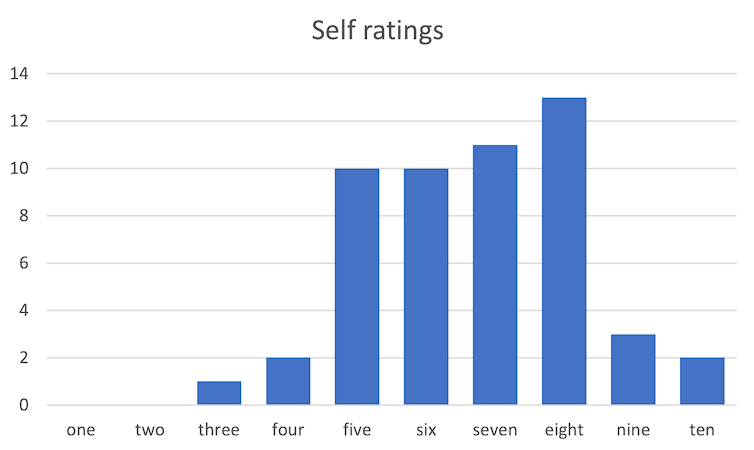

We conducted a survey among our batchmates, and the qualitative data we wanted to ask from them were their sex (male or female) and how well they think they're doing academically. Basically, we asked our participants to rate their academic success on a scale from 1 to 10, with 1 being the lowest, and 10 being the highest.
GenderWe had 52 respondents in total, and it seems that most of them were female, or to be specific, 37 out of 52 (71%). The remaining 15 (29%) were male. |
Self ratingFor the self-ratings, we asked our batchmates to rate how well they're doing academically on a scale of 1–10, and it seems that most people answered 8 (13 people, 25%), while the least answered were 1 and 2, because no one answered them (0%). The second least answered was 3 — only one person answered it (2%). |